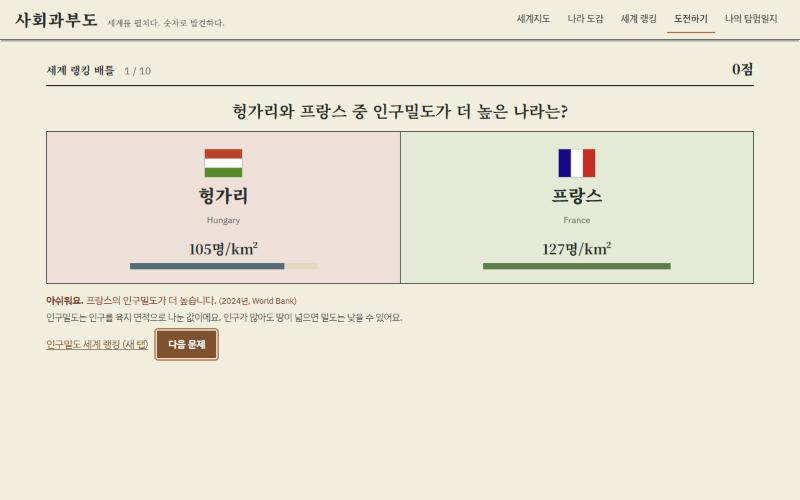

About the service
Find countries on a world map and open a profile page for each one to read its location, basic facts, figures and world rankings. See how large each country is, how many people live there and how much they earn, side by side on the same basis.
It does not stop at reading. In the challenge section you check what you learned with a world-map challenge and a world-ranking battle, and the countries you visited and lessons you finished stay in your exploration journal.
The statistics come from the World Bank, and rankings use values from a single reference year only. The 195 countries are the 193 UN member states plus two observers (the Holy See and Palestine); this is the service's editorial scope, not a judgment on statehood.
What is in it
See the world in three colorings: the base map, population density and GDP per capita. Search countries by name in Korean or English, jump by continent, and click a country to open its profile panel on the right.
Browse all 195 countries by continent or alphabetically. An open profile holds location, basic facts, figures, rankings, a short story, comparisons and review questions.
Twelve indicators as a list and a map: population, land area, population density, GDP, GDP per capita, economic growth, consumer price inflation, total fertility rate, life expectancy, urbanization, manufacturing value added share and internet use. Filter by continent and flip between highest and lowest first.
In the challenge section you can find countries on a map, or pick which of two countries has the higher value in a ranking battle. Each answer comes with the reference year and source.
Twelve study notes follow questions such as what a fertility rate of 2.1 means, to teach how to read an indicator.
Records the countries you visited and the notes you completed. Records are stored only in this browser.
Screens

Click a country to open its profile

World rankings as a list and a map

Rank battle: pick the higher of two countries

Country profiles: browse by continent or alphabet
Data and ranking rules
Areas outside the country list are drawn only in a neutral color with no political explanation. The Holy See has no World Bank statistics, so every indicator shows "no data". For Israel and Palestine, where the status of the capital is disputed internationally, the source wording is kept and only that fact is noted.
Tech and how it was made
Status
MVP 0.1, open to everyone right away. Your exploration journal is stored only in this browser.